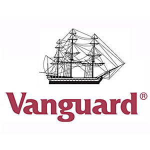

I am primarily a Java Developer, utilizing RESTful services and mid-tier to process large volumes of client information using the Spring Framework. All code is covered through jUnits with a TDD approach. We organize our project tasks using Scrum and Kanban methodologies.
I am also working front-end to create a web application for quarterly crew performance using AngularJS with Jasmine for unit testing.
I placed #1 in the 2017 Vanguard Hackathon for North Carolina with an educational VR application that simulates how investing works.